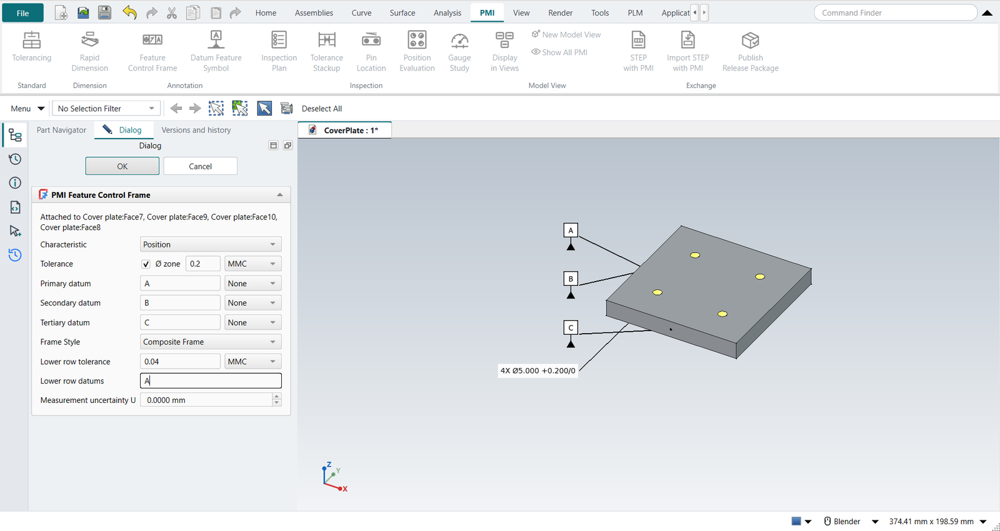
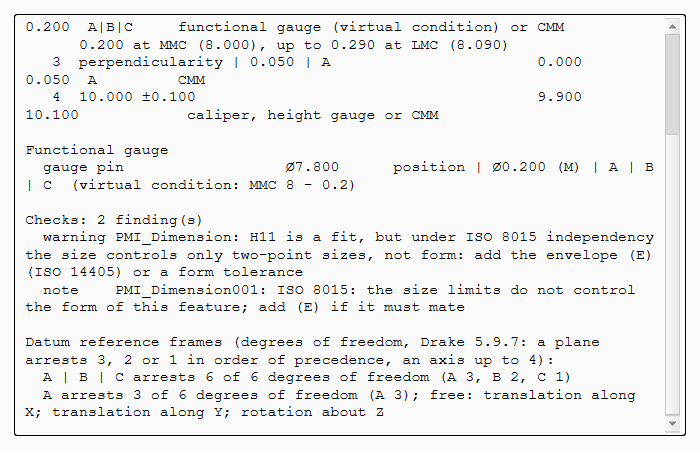

PMI and technical product documentation
NX documents a part in the model: Product and Manufacturing Information (PMI) on the PMI tab, kept in the Part Navigator’s PMI folder and inherited by drawings. FreeCAD has no PMI. NX-Style adds it, with the semantics a precision-engineering company works to: technical product documentation (TPD) to ISO GPS, or ASME Y14.5 where a customer asks for it.

The PMI tab
| Button | Does |
|---|---|
Tolerancing |
The part’s standard, ISO GPS (the default) or ASME Y14.5, and its general tolerances, e.g. |
Rapid Dimension |
A dimension on the model. Select one cylinder (diameter) or two faces (distance) first. The nominal is measured from the model and follows design changes. Give it an ISO 286 tolerance class (H7, g6 …: the dialog shows the limits), or upper and lower deviations, the envelope Ⓔ (ISO 14405), theoretically exact, and a quantity (4X). |
Feature Control Frame |
A geometrical tolerance on the selected face: characteristic, Ø zone, tolerance, Ⓜ or Ⓛ, up to three datums with modifiers. The same dialog as Drafting’s. Frame Style makes it a two-row frame (below). |
Datum Feature Symbol |
A datum letter on the selected face. |
Inspection Plan |
Numbers the characteristics (the balloons on the model) and lists them with their limits, where the tolerance comes from, and how to measure them; the functional gauge sizes; the checks. |
Tolerance Stackup |
Tolerance analysis, with Add from PMI. |
Pin Location |
How precisely two pins locate a part, from the PMI of the pins and the holes. |
Position Evaluation, Gauge Study |
Inspection: a measured hole pattern against its frame, a gauge against its tolerance. |
Display in Views |
Which model views the selected PMI show in: tick one to move it, several to copy it, or All views (NX: RMB › Display › in Views). |
New Model View |
The current view direction as a new model view, made the work view. |
Show All PMI |
No work view: every PMI shows, whichever view it belongs to. |
STEP with PMI |
The part as STEP AP242 with its PMI as data (below). |
Import STEP with PMI |
An AP242 file’s parts with their PMI, as NX-Style PMI on their faces (below). |
Publish Release Package |
Each PMI is attached to its faces by a link that FreeCAD’s topological naming keeps on the same face. It is drawn at a constant size with a leader to the face; frames and datum symbols use the same drawing as NX-Style’s Drafting dialogs. Its values are properties: change the Fit, the Envelope or a tolerance in the property view and everything that uses it follows, the stack-ups too.
A deviation of zero is written as the digit 0, without a sign (ISO 129-1, and ASME Y14.5 for metric drawings): 4X Ø5.000 +0.200/0, Ø16.000 H7 (+0.018/0).
Dimensions and frames also have a Measurement uncertainty U, the uncertainty of the method that checks them. The inspection plan turns it into a TUR and the ISO 14253-1 acceptance limits (Inspection).
Composite and stacked frames
A pattern of holes often needs its holes held to each other more tightly than the pattern is held to the datums. ASME Y14.5 states this with a two-row frame (Cogorno ch. 12; Drake ch. 5). In the Feature Control Frame dialog, choose a Frame Style and fill in the lower row: its tolerance, its Ⓜ or Ⓛ, and its datums.
| Frame Style | Means |
|---|---|
Composite Frame |
One position symbol for both rows. The upper row, the pattern-locating zone framework (PLTZF), locates and orients the pattern to its datums. The lower row, the feature-relating zone framework (FRTZF), holds the features to each other and orients them to the datums it repeats, but never locates them. It may repeat only the upper row’s datums, in their order. |
Stacked Frames |
Two single-segment frames, each with its own symbol. The lower row’s datums locate as well as orient. |

The checks require a two-row frame to be position or profile, the lower row to be tighter than the upper one, and a composite lower row to repeat the upper row’s datums in their order. Under ISO GPS, a two-row frame gets a note: ISO states a pattern requirement with ISO 5458 (two frames, combined zone CZ). The inspection plan lists each row as a characteristic with its own bonus and method. The functional gauge has one gauge per row: the FRTZF gauge’s pins float, with no stops for the location datums (Cogorno ch. 13). STEP AP242 receives the rows as two position tolerances, because OpenCASCADE’s XCAF has no relationship that ties them together; the Information window says so. Inherit PMI draws the two-row frame on the sheet. Position Evaluation decides from CMM data whether a measured pattern passes both rows.
Model views
As in NX, PMI belongs to model views. The part’s first PMI command (Tolerancing, Rapid Dimension …) adds a Model Views folder to the Part Navigator with NX’s eight: Front, Top, Right, Back, Bottom, Left, Isometric and Trimetric. They look as FreeCAD’s standard views do.
-
Double-click a model view: it becomes the work view (marked Work). The camera turns to it, and PMI not displayed in it are hidden.
-
A new PMI goes into the work view, and its label lies in that view’s plane: a column left of the part as the view shows it, rows down the screen. Sizes seen from above go in Top, thicknesses and flatness in Front, and each view stays readable.
-
Display in Views moves or copies the selected PMI to other views, or shows them in all views.
-
Show All PMI ends the work view; everything shows, each label in its own view’s plane.
-
PMI made with no work view, and PMI of parts made before model views existed, show in every view.
The release package’s pmi.json lists the model views, and each annotation’s views.


Tutorial Y works through it.
ISO GPS or ASME Y14.5
The two differ where it matters for a fit:
-
ISO 8015 independency is ISO’s default: a size tolerance controls only local two-point sizes, not form. A fit is only guaranteed with the envelope Ⓔ, a form tolerance, or a general note with
-E(ISO 2768-mK-E). ASME’s Rule #1 puts every size inside an envelope of perfect form at MMC, so Ⓔ is redundant there. -
ISO 2768 general tolerances cover every dimension without its own tolerance:
ISO 2768-mgives a 30 mm length ±0.2 (over 6 up to and including 30), a 40 mm one ±0.3. ASME Y14.5 has no general tolerances. -
ASME does not use I, O and Q as datum letters, and its 2018 edition dropped concentricity and symmetry (ISO keeps coaxiality and symmetry).
Checks
Inspection Plan checks the PMI as an experienced checker would:
-
a fit class without the envelope under ISO 8015 (warning), a feature of size without one (note);
-
a dimension with no tolerance and no general tolerance note;
-
form tolerances with a datum, orientation and run-out without one, run-out or concentricity with Ⓜ, Ⓜ on a plane, a Ø zone on a plane;
-
datums referenced but not identified, identified twice, referenced at MMC though not a feature of size;
-
an ISO 286 shaft class on a hole or the other way round.
Functional gauge
For a frame at MMC on a feature of size, the plan gives the gauge element at its virtual condition: a gauge pin of the hole’s MMC minus its tolerance, a gauge hole of the pin’s MMC plus its tolerance. A datum feature of size referenced at MMC is simulated at its maximum material boundary, its orientation tolerance’s virtual condition. The unit tests reproduce Cogorno’s hole-pattern plate (ch. 13): pins of .250 for the four holes, .500 for datum D.
Drawings inherit the PMI
In Drafting, select a view and click Inherit PMI:
-
diameters and distances become TechDraw dimensions on the matching edges, with their ISO class, deviations, Ⓔ and count;
-
frames and datum symbols are placed beside their face, if the view shows it edge-on or face-on;
-
the sheet gets the tolerancing note: Tolerancing ISO 8015, General tolerances ISO 2768-mK.
A PMI is placed once per sheet, in the first view that shows it. Dimensions covered by the general tolerance show no tolerance of their own, as on a drawing.
Which PMI a view inherits is its NX_InheritPMI property, NX’s Settings › Common › PMI › Inherit PMI (Wünsch, Pilz and Vajna, 6.10):
-
From Model View (the default): the PMI of the model view that looks the way the drawing view does (a top view gets Top’s), and those shown in all views. A view no model view matches takes them as below.
-
Aligned to Drawing (Entire Part): every PMI whose plane faces the drawing view, whichever model view it was made in.


STEP AP242 with semantic PMI
PMI › STEP with PMI writes the part and its PMI into one STEP AP242 file (ISO 10303-242). The PMI goes in as data that CAM, CMM software and other CAD systems read, not as pictures:
| NX-Style PMI | STEP AP242 |
|---|---|
Datum Feature Symbol |
|
A frame’s datums |
|
Diameter, radius |
|
Width of a slot or a tab |
|
Distance |
|
Deviations, ISO 286 class |
|
Feature Control Frame |
its tolerance entity (position, flatness …) with the cylindrical zone for Ø, Ⓜ or Ⓛ, and its datum system; coaxiality under ISO when the toleranced feature is an axis |
FreeCAD’s own STEP export drops PMI.
Its Windows and conda builds ship pythonocc, which reaches OpenCASCADE’s dimension and tolerance tools and its AP242 writer; NX-Style maps its PMI onto them (nxstyle/ap242.py).
After writing, OpenCASCADE reads the file back, and the Information window reports what it found.
Without pythonocc the command writes plain STEP and says why.
Not written, because OpenCASCADE has no semantic slot for them: the envelope Ⓔ, theoretically exact dimensions, a count such as 4X, and the ISO 2768 general tolerance.
The Information window lists each one; they stay in pmi.json, the inspection plan and on the drawing.
OpenCASCADE 7.8 writes the IT grade of LIMITS_AND_FITS two too high (IT7 as '9'), and its own reader then returns IT9.
NX-Style writes the grade each dimension has; the unit tests and the self-test check it.
OpenCASCADE also takes a dimension’s lower tolerance as the size below nominal and writes its negative as the lower bound. The first two NX-Style versions with STEP with PMI (commits 8b05383 and e217d17, 2026-10-14) passed it signed, so their files gave lower bounds the wrong sign (±0.1 as +0.1/+0.1); write such parts again.
Import STEP with PMI
PMI › Import STEP with PMI reads an AP242 file into the open part (or a new one): each part as a solid, and its semantic PMI as NX-Style PMI on the same faces, which the Inspection Plan, the stack-ups, Pin Location and Inherit PMI then use as if they had been made here. A supplier receives the model and its tolerances in one file, and plans the inspection from it (tutorial Z).
What comes in: datums, diameters, radii, widths and distances with their deviations or ISO 286 class, and the frames NX-Style has, with their zone, Ⓜ/Ⓛ and datum system (MMB/LMB).
What does not: dimension types and tolerances NX-Style’s PMI has no form for (they are listed), saved views, and the graphical PMI.
OpenCASCADE’s reader returns only the size of a lower tolerance; NX-Style takes its sign from the file’s own TOLERANCE_VALUE, so +0.050/+0.020 comes back as written.
Datum reference frames
The Inspection Plan ends with every datum system the frames refer to, and the degrees of freedom it arrests (Drake, Dimensioning and Tolerancing Handbook, 5.9.7): a planar primary datum arrests three, a planar secondary two, a tertiary the last one; a cylinder’s axis up to four.
A | B | C arrests 6 of 6 degrees of freedom (A 3, B 2, C 1) A arrests 3 of 6 degrees of freedom (A 3); free: translation along X; translation along Y; rotation about Z
What stays free is named: the plate on A can still slide and turn on it, which is all a perpendicularity to A needs, but a position to A alone would not be located. A face and a hole perpendicular to it leave the turn about the hole: the report says rotation about Z through (25, 25, 0).

FreeCAD’s PMI plans and other add-ons
FreeCAD has planned a PMI workbench of its own (issues 29772 and 29773): an annotation set per part, model views, datums, dimensions and geometrical tolerances to ISO GPS, validation and AP242 exchange. NX-Style writes its PMI through the OpenCASCADE enumerations the plan maps its objects to (its appendix A). Tolerance analysis is outside that plan’s scope; here it is the stack-up and pin location analyses, which read the PMI.
The MBD Workbench add-on (LGPL-2.1, an early preview) also writes semantic AP242 through pythonocc, and reads it back into FreeCAD objects. NX-Style does not use it. The Tolerancing page of the FreeCAD wiki collects the earlier attempts.
What differs from NX
-
NX places a PMI with a click in the graphics window; here it is placed beside its face, one row per PMI in its view’s plane.
-
In NX Display › in Views is on the PMI’s right-click menu; here it is on the PMI tab. A model view here is a direction: the part is fitted when it becomes the work view. Show All PMI is NX-Style’s.
-
Model views are not written to STEP: OpenCASCADE does not export AP242 saved views (FreeCAD issue 29772 notes the same for OCCT 8.0).
-
NX’s PMI goes to STEP AP242 and JT. NX-Style writes STEP AP242 with semantic PMI, but no graphical PMI (the frames as drawn) and no JT.
-
The checks and the gauge sizes are NX-Style’s own; NX has PMI validation through separate checkers.